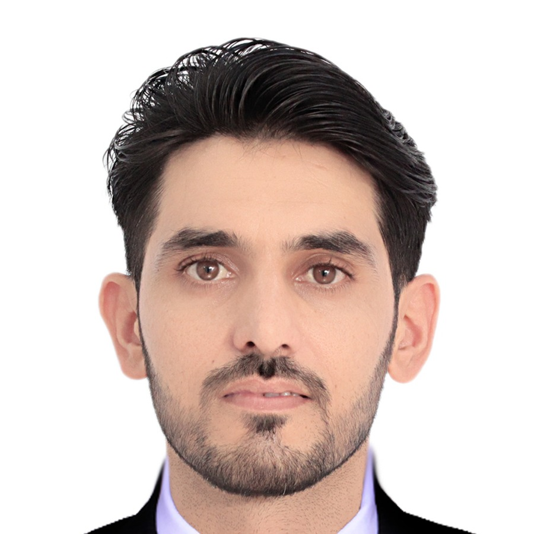

Muhammad Fayaz
Ph.D. Scholar in AI and Computer Vision
Computer Vision and Pattern Recognition (CVPR) Lab, Sejong University, Seoul


Current Position
Ph.D. Researcher
Computer Vision and Pattern Recognition Lab, Sejong University (Sep. 2023 - Feb. 2027)
Research, data analysis, paper writing, project support, collaboration, student assistance, and teaching-related support in AI and computer vision.
Education
Ph.D. Degree | CGPA: 4.38/4.5 (97.5%)
Sejong University, Department of Computer Science and Engineering, Seoul (Sep. 2023 - Feb. 2027)
Research Field: Computer Vision and Pattern Recognition Lab. Focus areas include remote sensing, anomaly detection in surveillance video, land-cover mapping, earth observation, and medical image analysis.
Master of Science in Computer Science | CGPA: 3.28/4.0 (80%)
Cyprus International University, TRNC/Turkey (Aug. 2019 - Sept. 2022)
Thesis: Brain Tumor Detection.
Bachelor of Science in Computer Science | CGPA: 3.12/4.0 (78%)
Islamia College Peshawar, Pakistan (Aug. 2014 - Sept. 2018)
Thesis: Online Donation System.
Technical Skills
Research Writing & Visualization
Microsoft Word, Microsoft PowerPoint, OriginPro.
Deep Learning Frameworks
TensorFlow, Keras, and PyTorch learning/adoption.
Programming & Development
Python, OpenCV, NumPy, Scikit-learn, Pandas, Matplotlib, MATLAB, Anaconda, Jupyter Notebook, Spyder, LaTeX, Code Ocean Capsule, Kaggle, C++, and Java.
Peer Review Records
Expert Systems with Applications, Neurocomputing, Engineering Applications of Artificial Intelligence, International Journal of Applied Earth Observation and Geoinformation, IEEE Transactions on Neural Networks and Learning Systems, Artificial Intelligence Review, Pattern Analysis and Applications, Scientific Reports, and Signal, Image and Video Processing.
Participated Projects
Development of Digital Quarantine and Operation Technologies for Safe Viewing Environments in Cultural Facilities
Researcher | Korea Creative Content Agency
Developing a System for Operating Unmanned Aerial Vehicles for Automatic Forest Disease Monitoring
Researcher | Korea Forest Service / Korea Forestry Promotion Agency
Digital Quarantine and Operation Technology for Cultural Facilities
Researcher | Electronics and Telecommunications Research Institute (ETRI)
Conferences Attended
GeoSwin: Hierarchical Representation Learning and a Large-Scale Earth Observation Benchmark
CVPR 2026, Colorado, USA
TSF-CVGL: A Transformer-Based Semantic Framework for Cross-View Geolocalization
Korea Information Science Society, Yeosu, Republic of Korea, 2025
Blockchain Integration for Secure and Transparent Satellite Remote Sensing Data Systems
IAAA, Da Nang, Vietnam, 2025
References
Prof. Hyeonjoon Moon
CVPR Lab, Sejong University | hmoon@sejong.ac.kr
Prof. L. Minh Dang
CVPR Lab, Sejong University | minhdl@sejong.ac.kr
Prof. Hikmat Yar
PRISM-AI Center / KAIST | hikmatyar@kaist.ac.kr
Dr. Zulfiqar Ahmad Khan
Umeå University | zulfiqar.khan@umu.se